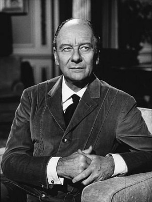
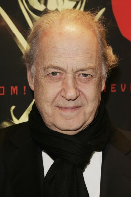
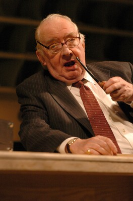

#6511 Der Elefantenmensch
Alternativ: The Elephant Man
Auszeichnungen: für 8 Oscars nominiert 3 BAFTA-Awards gewonnen

 IMDB-Wertung: 8.2 / 10
IMDB-Wertung: 8.2 / 10  IMDB-TOP-Platzierung: 149
IMDB-TOP-Platzierung: 149  Metascore: 0
Metascore: 0 
Seit seiner Kindheit ist John Merrick furchtbar entstellt. Als "Elefantenmensch" wird er auf Jahrmärkten vorgeführt und von seinem sadistischen "Besitzer" gequält, bis ihn schließlich der Arzt Frederick Treves entdeckt und ihm Hilfe anbietet. John Merrick soll endlich wie ein Mensch leben. David Lynchs zweiter Spielfilm ist ein eindringliches Plädoyer für Menschlichkeit und Würde. Die meisterliche Schwarzweißfotografie von Kameramann Freddie Francis und das bemerkenswerte Spiel von John Hurt und Anthony Hopkins ließen den Film zu einem gefeierten Klassiker werden.
Jahr: 1980
Dauer: 123 Minuten
FSK: 12
Land: USA Studio: Paramount PicturesTonspuren:
Untertitel:
Auflösung: 1080p (1920x800) Größe: 11980 MB
Genre: Drama, Biographie
Regisseur:  David Lynch
David Lynch
Drehbuch: Christopher De Vore
Soundtrack:
Darsteller:
 Anthony Hopkins als Frederick Treves
Anthony Hopkins als Frederick Treves John Hurt als John Merrick
John Hurt als John Merrick Anne Bancroft als Mrs. Kendal
Anne Bancroft als Mrs. Kendal-  John Gielgud als Carr Gomm
- Wendy Hiller als Mothershead
 Freddie Jones als Bytes
Freddie Jones als Bytes Michael Elphick als Night Porter
Michael Elphick als Night Porter- Hannah Gordon als Mrs. Treves
- Helen Ryan als Princess Alex
-  John Standing als Fox
 Dexter Fletcher als Bytes' Boy
Dexter Fletcher als Bytes' Boy- Lesley Dunlop als Nora
 Phoebe Nicholls als Merrick's Mother
Phoebe Nicholls als Merrick's Mother- Pat Gorman als Fairground Bobby
 Claire Davenport als Fat Lady
Claire Davenport als Fat Lady- Patsy Smart als Distraught Woman
 William Morgan Sheppard als Man In Pub
William Morgan Sheppard als Man In Pub- Kathleen Byron als Lady Waddington
-  David Ryall als Man With Whores
- Pauline Quirke als 2nd Whore
 Kenny Baker als Plumed Dwarf
Kenny Baker als Plumed Dwarf- Patricia Hodge als Screaming Mum
- Adam Caine als Kid at Train Station , uncredited
- Tony Clarkin als Thug from Pub , uncredited
 David Lynch als Man in the Bowler Hat in the Mob Chasing Merrick , uncredited
David Lynch als Man in the Bowler Hat in the Mob Chasing Merrick , uncredited Fred Wood als Injured Man , uncredited
Fred Wood als Injured Man , uncredited- Orla Pederson als Skeleton Man
- Frederick Treves als Alderman
- Stromboli als Fire Eater
- Richard Hunter als Hodges
- James Cormack als Pierce
- Robert Lewis Bush als Messenger
- Roy Evans als Cabman
- Joan Rhodes als Cook
- Nula Conwell als Nurse Kathleen
- Tony London als Young Porter
- Alfie Curtis als Milkman
- Bernadette Milnes als 1st Fighting Woman
- Brenda Kempner als 2nd Fighting Woman
- Carol Harrison als Tart
- Hugh Manning als Broadneck
- Dennis Burgess als 1st Committee Man
- Fanny Carby als Mrs. Kendal's Dresser
- Gerald Case als Lord Waddington
- Deirdre Costello als 1st Whore
- Chris Greener als Giant
- Marcus Powell als Midget
- Gilda Cohen als Midget
- Lesley Scoble als Siamese Twin
- Teri Scoble als Siamese Twin
Datei: X:\1980\Elefantenmensch, Der (1980, FSK12, 1920x800).mkv seit 05.07.2017
Festplatte: HD 1980-1986
 Es gibt insgesamt 33 Filme in der Gruppe '1980'
Es gibt insgesamt 33 Filme in der Gruppe '1980'